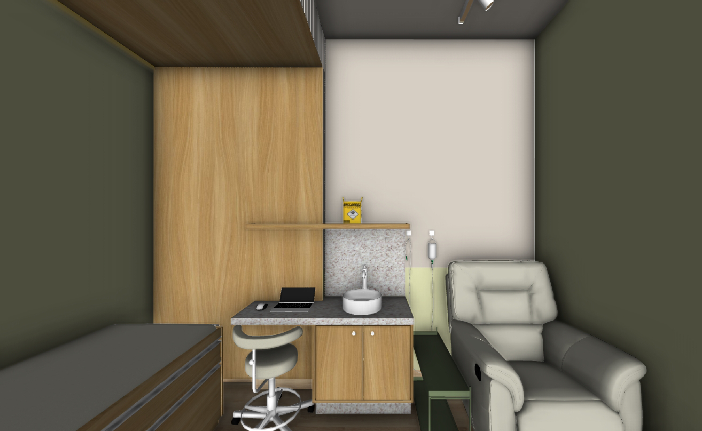
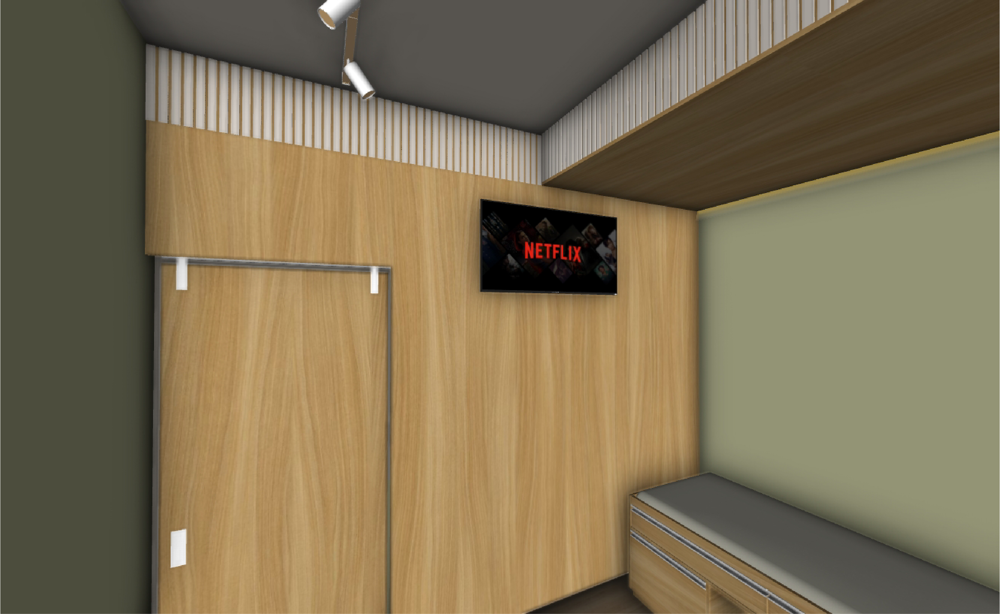
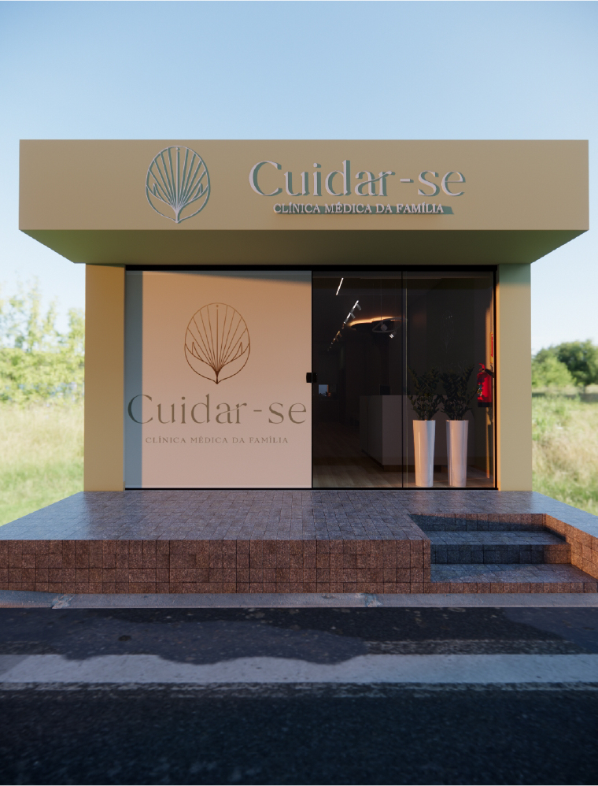

Conheça mais a clínica
por dentro.





×

Na Clínica Cuidar-se, oferecemos atendimento completo e humanizado, com foco em prevenção, diagnóstico precoce e acompanhamento contínuo.
Acreditamos em uma relação de confiança, baseada na escuta e no olhar integral para cada paciente.
Mais do que resolver sintomas, nosso objetivo é promover saúde de forma contínua.
Acompanhamos você e sua família ao longo do tempo, com orientações claras, planos personalizados e uma equipe comprometida com o seu bem-estar.
Nossa atuação é guiada pelos princípios da Medicina de Família:
Oferecemos uma linha completa de serviços voltados à saúde do coração e ao acompanhamento das doenças crônicas mais prevalentes. Desde a consulta clínica até exames realizados no local — eletrocardiograma, MAPA, Holter 24h e polissonografia portátil — garantimos precisão diagnóstica e planos de tratamento personalizados.
O cuidado integral da saúde feminina é uma das prioridades da Clínica Cuidar-se. Nossos serviços foram pensados para garantir prevenção, acompanhamento contínuo e suporte em diferentes fases da vida da mulher, sempre com acolhimento, privacidade e qualidade técnica.
A vacinação é parte essencial da prevenção e do cuidado ao longo da vida. Na Cuidar-se, você encontra um serviço de imunização seguro, com vacinas aprovadas pela ANVISA, equipe capacitada e registro completo das doses aplicadas.
A Clínica Cuidar-se dispõe de uma estrutura completa com sala de exames e sala de medicação, garantindo conforto, segurança e acompanhamento adequado.
Estamos prontos para acolher você e sua família com cuidado, atenção e excelência.
Agende sua consulta e inicie uma nova etapa no seu cuidado com a saúde.
(91) 98282-6050
Rua Nazeazeno Ferreira, Padre Luiz, s/n, Bragança, Pará
Seg a Sex
8h às 18h